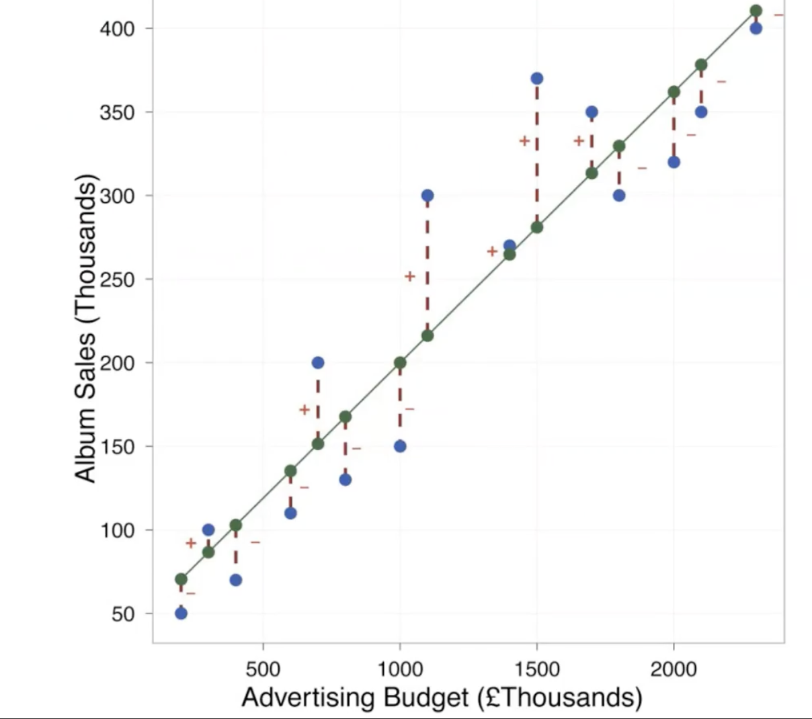

Regression Equation
Linear regression expresses the relationship between two variables, \(X_i\) and \(Y_i\).
The \(_i\) refers to the cases in the dataset, so if there are 1000 cases, then \(_i\) is 1-1000. Each \(_i\) refers to a ‘student’.
\[Y_i=b_0+{b_1}{X_i}+\epsilon_i\]
Where:
- \(b_1\) is the slope or regression coefficient (how much \(Y\) will change when \(X\) increases by 1)
- \(b_0\) is the \(Y\)-intercept, where the regression line crosses the \(Y\) axis
- \(\epsilon_i\) is the error term
or
\[\hat{Y}=b_0+{b_1}{X_i}\]
Where:
- \(\hat{Y}\) is the predicted value of \(Y\)
Notes:
Larger values of \(b_1\) indicate a steeper regression line
- left image, red is positive slope and green is negative slope (negative correlation; when predictor increases, outcome decreases)
- right image, all slopes positive
Calculating Regression
- any dataset is made up of points, and regression finds the best fitting straight line for the dataset
Best Fit
- need to define mathematically the distance between each data point and the regression line
- for every \(X\) value in the data, the linear equation can determine the \(Y\) value on the line - called predicted \(Y\), or \(\hat{Y}\)
- this distance measures the error between the line and the data
- if all data points were on the line, then the line ‘fits’ the data perfectly
- \(\hat{Y}\) should be close to actual \(Y\)

- green dots = \(\hat{Y}\)
- blue dots = \(Y\)
- distance between the green and blue dots is the prediction error - need to minimize
- some are positive (above the line) and some are negative (below the line)
- since some are positive and some are negative, if we want to add the error values together, we need to get rid of the signs by squaring the distance and adding the squared error
\[total \space squared \space error ={\sum^n_{i=1}}({Y_i}-{\hat{Y_i}})^2\]
- for each poissible line, we can calculate the total squared error, then choose the line with the lowest total squared error, which is the regression line
- this minimizes the difference between the line and the observed data
- this line is called the least squared error solution
- this method is inefficient due to the infinite number of lines possible
- calculus is a mathematical technique to find the maxima or minima of a mathematical expression.
- Using this method, the regression coefficients (slope (\(b_1\)) and intercept (\(b_0\))) that produce the minimum errors can be calculated.
Calculating Regression Coefficients
\[\hat{Y}_i=b_0+b_1X_i\]
\[\hat{b_1}=r\frac{S_Y}{S_X}\]
\[\hat{b_0}=M_Y-\hat{b_1}M_x\]
Where
\(r\) is the correlation between \(X\) and \(Y\)
\(S_X\) and \(S_Y\) are sample standard deviations for \(X\) and \(Y\)
\(M_X\) and \(M_Y\) are sample means for \(X\) and \(Y\)
These are raw regression coefficients (\(b_1\)): the change in outcome is associated with a change in the predictor
Standardized regression coefficients
- tell us the same thing, except expressed as standard deviations
- if both variables \(X\) and \(Y\) have been standardized by transforming tehm into Z-scores before calculating the regression coefficients, then the regression coefficients become *standardized coefficients
\[\hat{Z_{Y_i}}=\beta{Z_{X_i}}\]
\[\beta=r\]
Where
\(\hat{Z_{Y_i}}\) is the standard deviation of \(Y\)
\(\hat{Z_{X_i}}\) is the styandard deviation of \(X\)
\(\beta\) is the correlation coefficient
Standardizing \(X\) and \(Y\) puts the variables on the same scale - when \(X\) increases by 1SD, \(Y\) increases by 1SD
Analysis of regression
- regression line is only a model based on the data
- process of testing the significance of a regression equation is called analysis of regression
- null hypothesis in the analysis of regression states that the equation does not account for a significant proportion of the variance in \(Y\) scores
- analysis of regression is similar to ANOVA
Sum Square Total (\(SS_T\) (left plot)) is \(\sum(Y-\bar{Y})^2\)
Sum Square Residual (\(SS_R\) (right plot)) is \(\sum(Y-\hat{Y})^2\)
- prediction error - squared distance between the data and the regression line
- needs to be minimized
- this is the variability that is not explained by the regression equation
Sum Square model (\(SS_M\)) is \(\sum(\hat{Y}-\bar{Y})^2\)
in this equation, \(\hat{Y}=b_0+b_1X\)
\(SS_T\): total variability is the variability between the scores and the mean
\(SS_R\): sum squared residual is the residual or error variability between the regression model and the data
\(SS_M\) or sum square regression: Model variability - difference in variability between the model and the mean.\(Y\) are determined by the value of \(X\)
\(SS_T\) is the sum of \(SS_R\) and \(SS_M\)
- part of the variability is residual - we don’t know what is causing
- part of it is due to the model - the relationship between \(Y\) and \(X\)
- part of the variability is residual - we don’t know what is causing
The proportion of variability in \(Y\) that is predicted by its relationship with \(X\):
\[\frac{SS_{regression}}{SS_T}=r^2\]
\(r^2\) is an effect size that tells us the proportion of variability that is accounted for by the model
The proportion of the variability that is not accounted for is
\[\frac{SS_{residual}}{SS_T}=1-r^2\]
\(r^2\) is very mieaningful
if \(R^2\) is 20%, then the amount of the variability in \(Y\) that is accounted for by the model is 20%, which is quite large.
Therefore
\[SS_{regression}=r^2SS_T\]
\[SS_{residual}=(1-r^2)SS_Y\]
\(SS_Y\) is the same thing as \(SS_T\)
\(r^2\) is the Pearson Correlation Coefficient squared
Total variability is partitioned into two - sum squared regression (explained by the model) and sum squared residual (not explained by the model).
Same for degrees of freedom
Sums of squares are total values and can be expressed as averages called Mean Squares, or \(MS\) AKA variance
\[MS_{regression}=\frac{SS_{regression}}{df_{regression}}\]
- mean square variance is the variance accounted for in the model
\[MS_{residual}=\frac{SS_{residual}}{df_{residual}}\]
- mean square residual is the variance not accounted for in the model
An \(F\)-ratio can be used to compare these two mean squares
\[F=\frac{MS_{regression}}{MS_{residual}} \text{with}\: df=1,n-2\]
- if the mean square regression is small compared to the mean square residual, then the model does not account for much variance
- if the mean square regression is larger than the mean square residual, then the model accounts for more variance
An Example (Fields)
- record company boss interested in predicting album sales from advertising bsed on 200 different album releases
- outcome variable: sales of CDs and downloads in the week after release
- predictor variable: amount in GBP spent promoting the album before release
\(r^2\) = 0.335, so 33.5% of the variability is shared by both variables (cutoffs, 9% - small, 25% - large effect size)
Activities
In a survey that included assessment of husband and wife heights, Hodges, Krech and Crutchfield (1975) reported the following results. Let’s treat wife height as the predictor (X) variable and husband as the outcome (Y) variable:
\(r_XY\) = .32, \(N\) = 1, 296
Wife height: \(M_X\) = 64.42, \(S_X\) = 2.56
Husband height: \(M_Y\) = 70.46, \(S_Y\) = 2.87
a. Calculates the values of \(b_0\) and \(b_1\) to predict husband height in inches (Y) from wife height in inches (X), and write out this raw score predictive equation
\[\hat{b_1}=r\frac{S_Y}{S_X}\]
\[\hat{b_1}=.32\frac{2.87}{2.56}\]
\[\hat{b_1}=0.35\]
\[b_0=M_Y-\hat{b_1}M_X\]
\[b_0=70.46-(0.35*64.42)\]
\[b_0=70.46-22.54\]
\[b_0=47.91\]
Predictive Equation \[\hat{Y}=b_0+{b_1}{X_i}\] \[\hat{Y}=47.91+(0.35*{X_i})\]
- For women: what is your own height? Substitute your own height into the equation from step a, and calculate the predicted height of your present or future spouse.
\[\hat{Y}=47.91+(0.35*67)\]
\[\hat{Y}=71.36\]
- Now reverse the roles of the variables (i.e., use husband height as the predictor and wife height as the outcome variable). Calculates the values of bb0 and bb1.
\[\hat{b_1}=r\frac{S_Y}{S_X}\]
\[\hat{b_1}=.32\frac{2.56}{2.87}\]
\[\hat{b_1}=.32*.89\]
\[\hat{b_1}=.28\]
\[b_0=M_Y-\hat{b_1}M_X\]
\[b_0=64.42-(0.28*70.46)\]
\[b_0=64.42-19.72\]
\[b_0=44.7\]
\[\hat{Y}=44.7+(0.28*{X_i})\]
- For men: what is your height in inches? Substitute your own height into the equation from step c, and calculate the predicted height of your present or future spouse.
\[\hat{Y}=44.7+(0.28*70)\]
\[\hat{Y}=64.3\]
- What proportion of variance in husband height is predictable from wife height? Test the significance of the regression equation.
\[r^2=.10\]
- If both X and Y have been standardized by transforming into Z scores before calculating the regression coefficients, what would be the values of bb0 and bb1 to predict husband height in inches (Y) from wife height in inches (X)? How does this standardized version of the prediction equation tell us about “regression toward the mean” for predictions?
\[\hat{Z_{Y_i}}=\beta{Z_{X_i}}\]
\[\hat{2.87}=0.32{2.56}\]